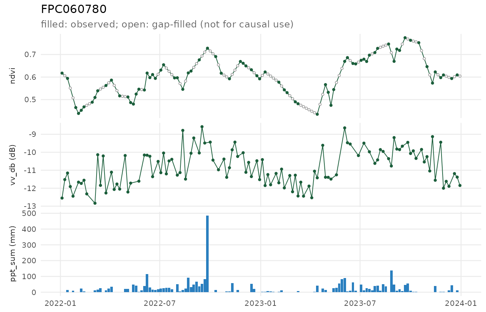
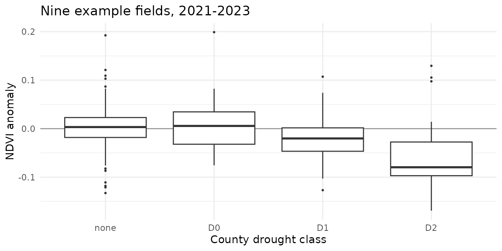

This vignette walks through a typical analysis of the Florida Pasture Cube:
- choose fields;
- read their 5-day series;
- look at a field;
- relate its greenness to drought.
It uses the small real extract shipped with the package, which holds
nine fields from Hardee, DeSoto and Highlands counties. With the full
data downloaded by fpc_download(), drop the
dir = d arguments.
library(fpcubeR)
d <- fpc_example_dir()1. Choose fields
fpc_fields() returns the fields as an sf
object in EPSG:5070. The tiers differ in how sure we are that a field is
grazed:
- A: fields on parcels coded as grazing land.
- B: fields on other parcels that were mapped as pasture in nearly every year.
- C: open pasture in the official land-use maps that the Cropland Data Layer maps as woody or wetland.
f <- fpc_fields(dir = d)
table(f$tier)
#>
#> A B C
#> 3 3 3
f[, c("field_id", "tier", "county", "area_ha", "hand_mean_m")]
#> Simple feature collection with 9 features and 5 fields
#> Geometry type: POLYGON
#> Dimension: XY
#> Bounding box: xmin: 1386915 ymin: 555975 xmax: 1487055 ymax: 609495
#> Projected CRS: NAD83 / Conus Albers
#> field_id tier county area_ha hand_mean_m geometry
#> 1 FPC059432 B Hardee 8.28 8.0297442 POLYGON ((1392525 609495, 1...
#> 2 FPC060780 A Hardee 16.65 0.9626154 POLYGON ((1387455 605895, 1...
#> 3 FPC061123 A Hardee 10.53 0.6225764 POLYGON ((1391325 604905, 1...
#> 4 FPC061831 B Hardee 34.83 1.1661365 POLYGON ((1391475 601725, 1...
#> 5 FPC062581 B Hardee 20.97 0.8724991 POLYGON ((1393035 599535, 1...
#> 6 FPC062877 A Hardee 115.74 1.7260204 POLYGON ((1390095 597435, 1...
#> 7 FPC094408 C Highlands 15.48 0.5854164 POLYGON ((1486815 581205, 1...
#> 8 FPC094588 C DeSoto 14.94 1.2259987 POLYGON ((1387515 576585, 1...
#> 9 FPC095347 C DeSoto 49.95 1.0317036 POLYGON ((1417245 557295, 1...Filters can be combined, and geometry = FALSE returns a
plain data frame:
fpc_fields(tier = c("A", "B"), county = "Hardee", geometry = FALSE, dir = d)[, c("field_id", "tier")]
#> field_id tier
#> 1 FPC059432 B
#> 2 FPC060780 A
#> 3 FPC061123 A
#> 4 FPC061831 B
#> 5 FPC062581 B
#> 6 FPC062877 A2. Read the series
fpc_composites() reads one row per field and 5-day
period. Gap-filled optical values are set to NA unless you
ask for them with observed_only = FALSE. They are built
from the next observation, so they must not enter forecasts or other
causal analyses.
x <- fpc_composites(f, vars = c("ndvi", "vv_db", "ppt_sum"), years = 2022, dir = d)
head(x)
#> field_id fid date ndvi vv_db ppt_sum n_optical_obs
#> 1 FPC059432 59432 2022-01-04 0.5673187 NaN 0.0000 2
#> 2 FPC059432 59432 2022-01-09 NA -11.51026 0.0000 0
#> 3 FPC059432 59432 2022-01-14 0.5754479 NaN 13.9515 2
#> 4 FPC059432 59432 2022-01-19 NA -12.71441 0.4209 0
#> 5 FPC059432 59432 2022-01-24 NA NaN 9.8918 0
#> 6 FPC059432 59432 2022-01-29 0.3857892 NaN 0.0000 2
#> gap_filled n_radar_obs
#> 1 FALSE 0
#> 2 TRUE 1
#> 3 FALSE 0
#> 4 TRUE 1
#> 5 TRUE 0
#> 6 FALSE 0
mean(!is.na(x$ndvi)) # share of field-periods with an observed NDVI
#> [1] 0.5540335fpc_variables() documents every variable:
v <- fpc_variables(d)
v[v$group %in% c("radar", "weather"), c("name", "units", "description")]
#> name units
#> 17 vv_db dB
#> 18 vh_db dB
#> 19 vh_vv_db dB
#> 20 ppt_sum mm
#> 21 tmean_mean degC
#> 22 tmin_mean degC
#> 23 tmax_mean degC
#> 24 vpdmax_mean hPa
#> description
#> 17 Sentinel-1 RTC gamma0 VV, mean in linear power over the period's acquisitions, converted to dB
#> 18 Sentinel-1 RTC gamma0 VH, mean in linear power over the period's dual-polarisation acquisitions, converted to dB
#> 19 VH minus VV backscatter
#> 20 PRISM precipitation, sum over the period
#> 21 PRISM mean daily temperature, mean over the period
#> 22 PRISM minimum daily temperature, mean over the period
#> 23 PRISM maximum daily temperature, mean over the period
#> 24 PRISM maximum daily vapour pressure deficit, mean over the period3. Look at a field
fpc_plot_field("FPC060780", vars = c("ndvi", "vv_db", "ppt_sum"), years = 2022:2023, dir = d)
The open circles are gap-filled values, drawn only to show the
seasonal course. The per-acquisition records behind the composites are
in fpc_observations():
o <- fpc_observations("optical", fields = "FPC060780", years = 2022, dir = d)
nrow(o)
#> [1] 93
table(o$sensor)
#>
#> L30 S30
#> 36 574. Greenness and drought
fpc_anomaly() compares each value with the field’s own
climatology for the same time of year, and
fpc_add_drought() adds the county drought class valid on
each date.
x3 <- fpc_composites(f, vars = "ndvi", dir = d)
a <- fpc_add_drought(fpc_anomaly(x3, "ndvi", ref_years = 2021:2022, min_years = 2), dir = d)
aggregate(anomaly ~ usdm_class, a, function(z) round(median(z), 3))
#> usdm_class anomaly
#> 1 0 0.003
#> 2 1 0.006
#> 3 2 -0.020
#> 4 3 -0.080
library(ggplot2)
a$drought <- factor(a$usdm_class, 0:5, c("none", "D0", "D1", "D2", "D3", "D4"))
ggplot(a[!is.na(a$anomaly), ], aes(drought, anomaly)) +
geom_hline(yintercept = 0, colour = "grey60") +
geom_boxplot(outlier.size = 0.5) +
labs(x = "County drought class", y = "NDVI anomaly", title = "Nine example fields, 2021-2023") +
theme_minimal()
Working with the full data set
fpc_download(c("fields", "composites", "labels")) # about 2.4 GB
fpc_download("optical") # per-acquisition HLS records, 4 GB
fa <- fpc_fields(tier = "A")
x <- fpc_composites(fa, vars = c("ndvi", "ppt_sum"), from = "2022-01-01", to = "2023-12-31")Reading all fields for one year gives about 4.6 million rows. Select the fields and variables you need, and the readers then load only those parts of the files.